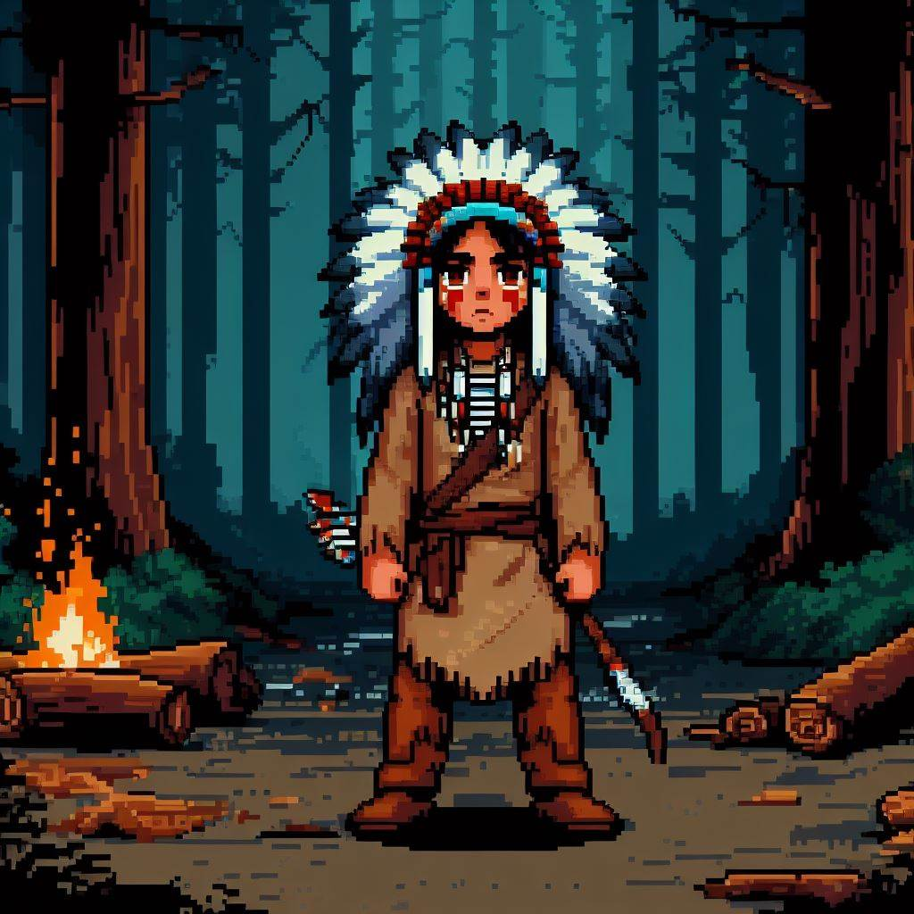
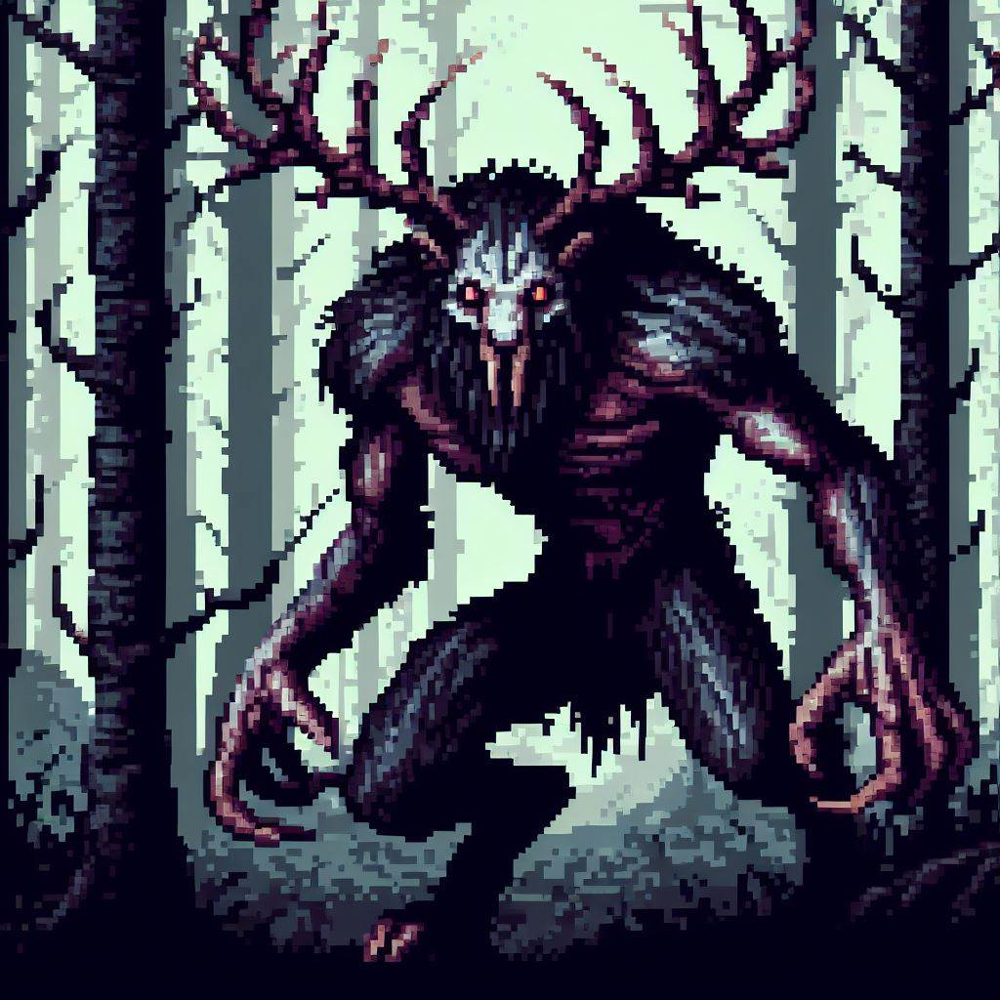

TODO Homepage
Deep in the forest lurks a dangerous beast which feeds off of the flesh of unsuspecting venturers, the wendigo. The wendigo romes the woods, from village to village, hunting the villagers until noone remanes, then moving on. If your village has the misfortune of being found by the wendigo, your best hope is to abandon the village and find somewhere else to live. Algonquin legend has it that the wendigo was formed from greed and jealousy, and now romes the forest, always on the hunt, never getting enough.
You play as Itawi, an Algonquin boy whose village is being hunted by the wendigo. To save your village, you must defeat the wendigo, however, this will not be easy. You must venture into the forest -- the home of the wendigo -- and come out alive on the other side. The village is counting on you.
| Genre: | Action-Adventure |
|---|---|
| Target Audience: | Those who are Ages 10+ and enjoy story based adventures |
| ESRB Rating: | Everyone 10+ contains mild fantasy violence |
| Mechanics: | Exploration, problem solving, combat |
| Platforms: | Steam, Linux, Windows, MacOS |
TODO Game Concept
Characters
Itawi
Itawi is a village boy. He is smart and fast, shares ideas when he them. Once he sets his mind to something, he gets it done. Itawi also loves the forest, and prides himself on his ability to nevigate and hide in the forest.
Wendigo
The wendigo. Born from the greed of humans, now hunts them for food, but is always hungry, never eating enough. Very few of those who find themselves hunted by the wendigo ever make it out of the woods.
Merchandise

T-Shirt
A T-Shirt with the 'The Woods Hunt' logo. Purchasing this supports the creation of further projects, and wearing the shirt shows your love for this game and story.
Drawstring Bag
A bag to help you carry things, with the 'The Woods Hunt' logo. Purchasing this supports the creation of further projects, and using the bag shows your love for this game and story.

Glowing Stone Night Light
A stone, put in a fire until the point of cracking, glowing from the heat. This stone will provide light in the dark. Purchasing this shows your appreciation of the game and helps support furute projects.

Wendigo Plush
The wendigo plushy. A fearsom beast to keep you company. Instead of hunting for food, this small creature just hunts for friends. Purchasing this shows your appreciation of the game and helps support furute projects.
TODO Transmedia
In a future update, I plan on adding an online story of the first Wendigo. This story will be told through a mix of videos and graphic novel style graphics.TODO About
Resources
- Website Code: Written by me (https://kittkat.xyz)
- Website Host: GitHub Pages (https://pages.github.com/)
- ESRB Logo Generator: https://jsfiddle.net/stinkysGTI/94fzgLam/62/
- Steam Logo: https://en.m.wikipedia.org/wiki/File:Steam_icon_logo.svg
- Linux Logo: https://upload.wikimedia.org/wikipedia/commons/thumb/3/35/Tux.svg/150px-Tux.svg.png
- Windows Logo: https://upload.wikimedia.org/wikipedia/commons/thumb/5/5f/Windows_logo_-_2012.svg/768px-Windows_logo_-_2012.svg.png
- MacOS Logo: https://upload.wikimedia.org/wikipedia/commons/thumb/a/ab/Icon-Mac.svg/768px-Icon-Mac.svg.png
-
Standard Merch Designs: https://www.customink.com/
- T-Shirt
- Drawstring Bag
-
AI Generated Images: https://designer.microsoft.com/
- Banner image
- Itawi character image
- Wendigo character image
- All images in cinimatic sequense/trailer
- Glowing stone merch image
- Wendigo plushy merch image
- Story References:
{kind=link}
{kind=link}
{kind=link}
{kind=link}